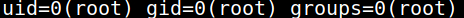
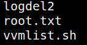
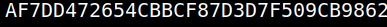

5.2 Getting the second flag
1. On the “Reverse Shell” run the following commands.
$id
Output:

You're alrady “root”.
2. Look for the flag.
$cd
/root
$ls
Output:

3. Show the flag.
$cat
root.txt
Output:

Index